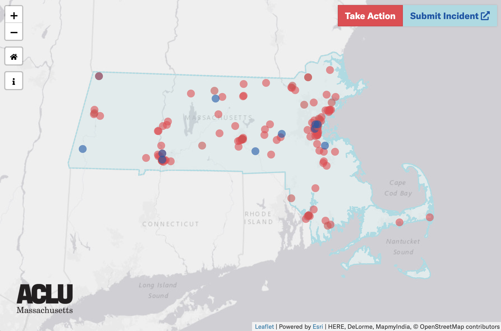

POLICE VIOLENCE HAPPENS HERE
As part of a Week of Action in support of strong police reform legislation, the ACLU of Massachusetts published a volunteer-built database cataloging incidents of violence and death at the hands of the police in Massachusetts. The campaign, titled Police Violence Happens Here, includes an interactive map that documents almost 200 incidents of police violence and misconduct across the Commonwealth over the past two decades.VIEW MAP
COVID-19 IN PRISONS & JAILS
Since March 2020, the ACLU of Massachusetts has maintained a dynamic web-based tracker to make data on COVID-19 in prisons and jails available to the public and perform preliminary analysis of trends. The data are reported to ACLUM via a Supreme Judicial Court order in response to an emergency petition, requiring all prison and jails across MA to provide daily or weekly reports on the state of COVID-19 in their facilities.VIEW TRACKER READ ABOUT IT

BOSTON POLICE BUDGET
In response to the murders of George Floyd, Breonna Taylor, Ahmaud Arbery, and Tony McDade by police in 2020, many Boston advocacy organizations such as the Muslim Justice League lobbied the Boston City Council to defund police. In support of these lobbying efforts, ACLUM conducted a detailed analysis of the Boston Police Department's $414 million proposed FY21 budget.READ ABOUT IT
RACE, OCCUPATION, AND COVID-19
Analysis by the ACLU of Massachusetts compares Boston Public Health Commission data on the distribution of COVID-19 cases across Boston to census data on race and occupation type. We demonstrate that COVID-19 is disproportionately concentrated within communities of color where high percentages of workers are in essential positions.READ ABOUT IT

BIASED FACIAL RECOGNITION
In December 2019, the non-partisan federal National Institute of Standards and Technology (NIST) published a landmark study presenting further evidence that facial recognition algorithms perform more poorly when examining the faces of women, people of color, the elderly, and children. ACLUM conducted a meta-analysis of the study, highlighting the widespread bias apparent in almost all tested algorithms.READ ABOUT IT